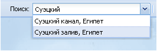
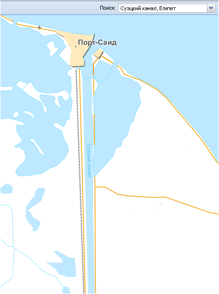

Окно Поиск
Меню Поиск позволяет быстро найти любой географический объект по его названию. После ввода с клавиатуры названия объекта раскроется ниспадающий список всех объектов, имеющих такое название, с их географической характеристикой.

При нажатии левой кнопкой мыши на интересующем объекте из списка он отобразится на экране в крупном масштабе.
